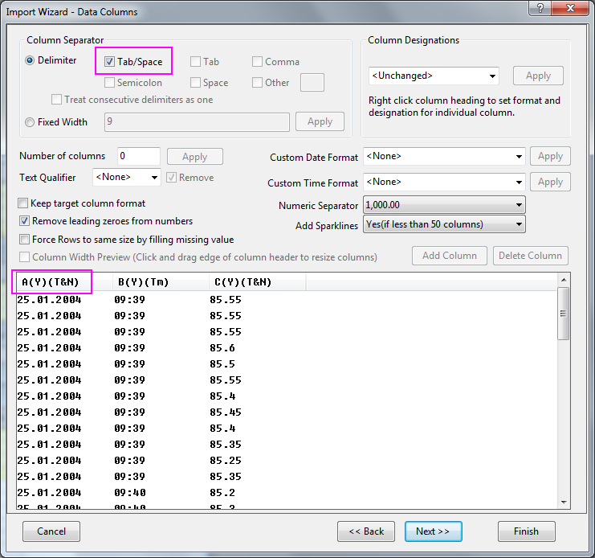

Zeitdaten importieren
Import-Time-Data
Zusammenfassung
Das Importieren von Datums-/Zeit-Daten wurde für die neueren Versionen von Origin stark verbessert. Origin 2020b fügte einen verbesserten Import von Datums-/Zeitdaten für den Text-/CSV-Konnektor hinzu und Origin 2021 verbesserte den Umgang mit Datums/-Zeitdaten beim Kopieren/Einfügen von MS Excel.
Es kann jedoch noch immer vorkommen, dass ein Datums-/Zeitformat nicht automatisch von Origin verarbeitet wird. Wenn das passiert, können Sie Origins Importassistenten verwenden, damit er Ihnen beim Analysieren und Formatieren der Datums-/Zeitdaten hilft. Dieses Tutorial zeigt Ihnen, wie Sie solch ein benutzerdefiniertes Datums-/Zeitformat mit Hilfe des Importassistenten importieren.
Origin-Version mind. erforderlich: 8.0 SR3
Was Sie lernen werden
Dieses Tutorial umfasst:
- Importieren von Daten mit mehreren Trennzeichen
- Definieren eines benutzerdefinierten Formats für Datum/Zeit
- Ändern der Anzeigeeinstellungen für das benutzerdefinierte Format für Datum/Zeit
- Wie werden Importeinstellungen in einem Filter für die erneute Verwendung gespeichert?
Schritte
- Wir importieren in diesem Tutorial die Datei \Samples\Import and Export\Custom Date and Time.dat. Vor Importieren der Datei werfen wir zuerst einen Blick auf die Datenstruktur.
Zwischen Datum und Zeit wird ein Leerzeichen angezeigt. Zum Trennen derZeit vom Rest der Daten wird eine Registerkarte verwendet. Daher benutzen wir mehrere Trennzeichen, um diese Datemdatei zu importieren.
- Öffnen Sie die Datei im Importassistenten. Akzeptieren Sie die Standardeinstellungen auf allen Seiten, bis sie zur Seite Datenspalten gelangen. Origin verwendet standardmäßig die Registerkarte, um die Daten in zwei Spalten zu unterteilen. Aktivieren Sie zum Unterteilen von Datum und Zeit das Kontrollkästchen Tab/Leerzeichen in der Gruppe Trennzeichen.
- 
Beachten Sie im Vorschaufeld, dass der Spaltentitel A(Y)(T&N) ist, wobei (T&N) das Datenformat Text & Numerisch bedeutet. Da das Datum "." zum Trennen von Tag, Monat und Jahr verwendet, verwendet Origin standardmäßig die erste Spalte alsText. Für die zweite Spalte Zeit zeigt Origin die zugrunde liegenden Werte. Um Daten korrekt zu importieren, sollten die Spalteneigenschaften geändert werden.
- Geben Sie im Bearbeitungsfeld Benutzerdefiniertes Datumsformat ein:
dd'.'MM'.'yyyy
wobei dd, MM und yyyy jeweils die Tage, Monate und das Jahr bedeuten. Da der "." als Trennzeichen verwendet wird, brauchen wir einfache Anführungszeichen bei der Formatspezifizierung. Nach Eingabe des benutzerdefinierten Formats drücken Sie auf die Schaltfläche Anwenden neben dem Bearbeitungsfeld. Klicken Sie dann mit der rechten Maustaste auf den Header der ersten Spalte in der Vorschau und wählen Sie Datum aus dem Kontextmenü:
Der Spaltentitel ändert sich dann in A(Y)(D), was bedeutet, dass es sich nun um eine Datenspalte für Datum handelt.
- Gleichermaßen klicken Sie mit der rechten Maustaste auf den Header der zweiten Spalte und wählen Sie Zeit, um diese Spalte als Zeitspalte zu setzen:

Die Zeitdatenanzeige ist jetzt im langen Format zu sehen. Wir können die Anzeigeeinstellungen nach dem Import ändern.
- Klicken Sie 2x auf Weiter, um zur Seite Filter speichern zu gelangen. Aktivieren Sie das Kontrollkästchen Filter speichern und die Option Im Ordner Anwenderdateien, um die Importeinstellungen in einem Filter zu speichern. Geben Sie den Filterdateinamen als Benutzerdefiniertes Datum und Zeit im Bearbeitungsfeld Dateiname Filter (.OIF Erweiterung wird angehängt) ein.
- Klicken Sie auf die Schaltfläche Fertigstellen, um die Datei zu importieren. Klicken Sie dann doppelt auf den zweiten Spaltentitel, um das Dialogfeld Spalteneigenschaften zu öffnen, und setzen Sie die Zeitanzeige als:
HH:mm:ss.##
Die endgültigen Arbeitsblattdaten nach dem Import werden folgendermaßen dargestellt:
- Öffnen Sie den Windows Explorer und navigieren Sie zum Ordner \Samples\Import and Export\. Suchen Sie die Datei Custom Date and Time.dat heraus und ziehen Sie sie per Drag&Drop in den Origin-Arbeitsbereich. Der Dialog Filter auswählen wird geöffnet und fordert Sie auf, einen Filter auszuwählen.

Wählen Sie den Filter Benutzerdefiniertes Datum und Zeit aus, den Sie gerade gespeichert haben. Er wird verwendet, um die Datei zu importieren.
Hinweis: Im Fall dieser besonderen Datendatei hat die erste Spalte genau dasselbe Datum in jeder Zeile. Zu diesem Zeitpunkt möchten Sie vielleicht diese erste Spalte auf Ignorieren setzen, indem Sie mit der rechten Maustaste auf den Spaltenheader klicken und Ignorieren aus dem Kontextmenü auswählen. Dann können Sie die 2. Spalte als Typ X setzen und die Daten in der dritten Spalte gegen die Zeitdaten in der 2. Spalte zeichnen.